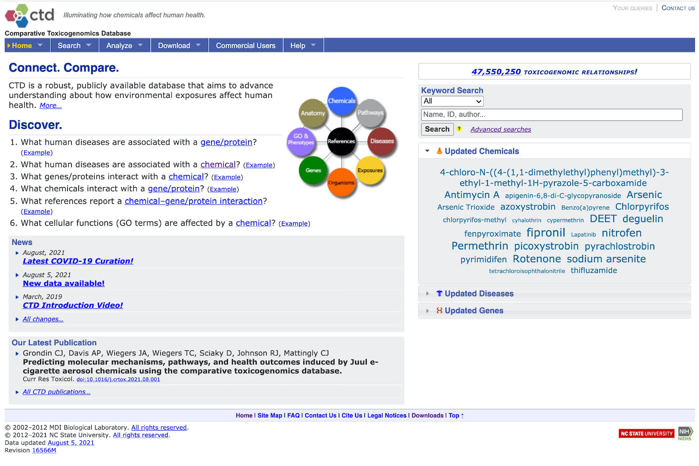
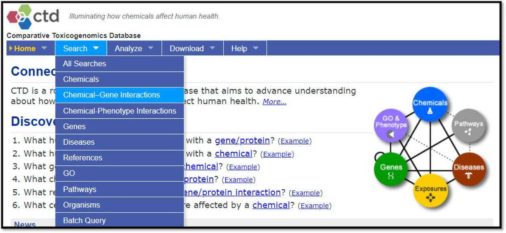
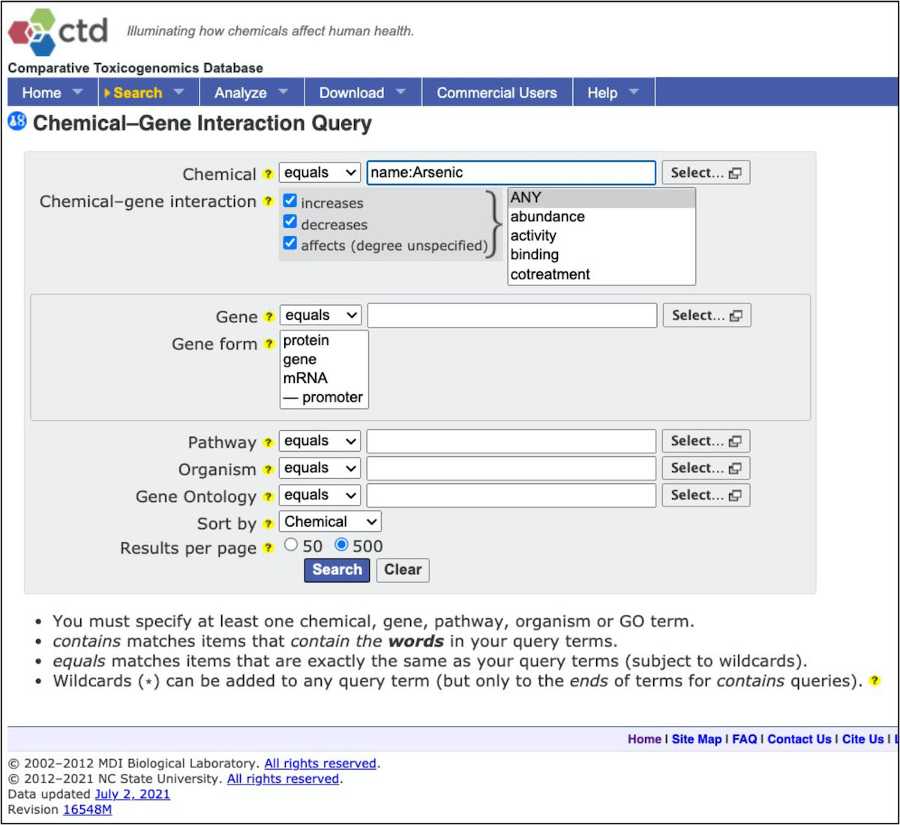
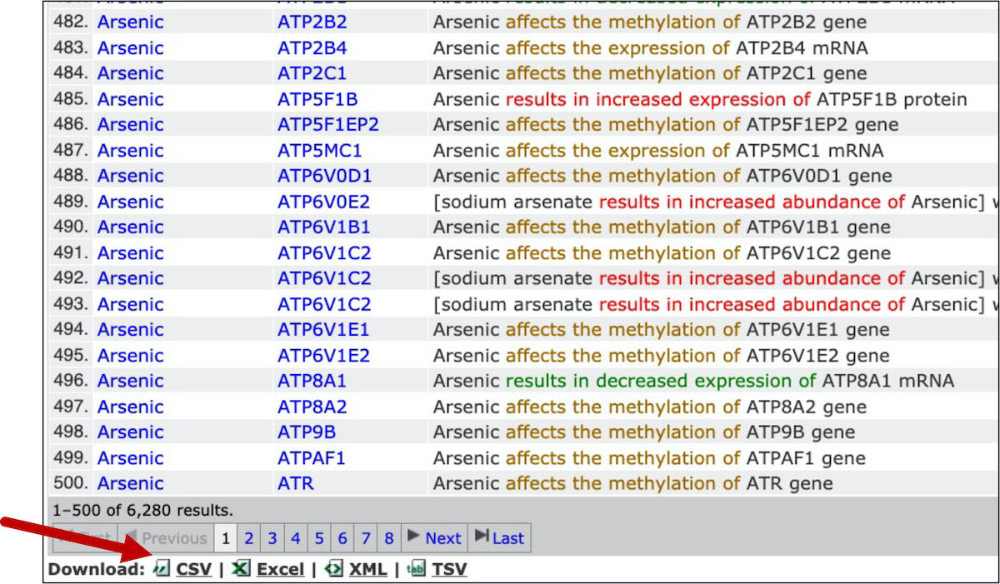
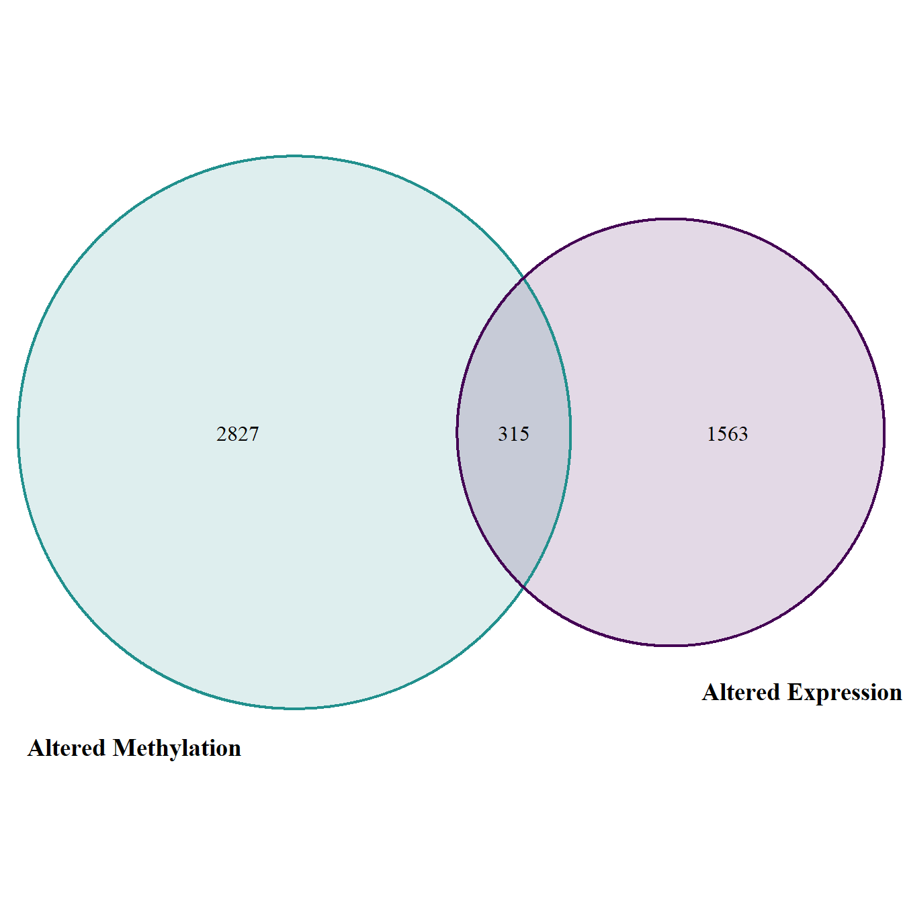

7.1 Comparative Toxicogenomics Database
This training module was developed by Lauren E. Koval, Kyle R. Roell, and Julia E. Rager.
All input files (script, data, and figures) can be downloaded from the UNC-SRP TAME2 GitHub website.
Introduction to Training Module
The Comparative Toxicogenomics Database (CTD) is a publicly available, online database that provides manually curated information about chemical-gene/protein interactions, chemical-disease and gene-disease relationships. CTD also recently incorporated curation of exposure data and chemical-phenotype relationships.
CTD is located at: http://ctdbase.org/. Here is a screenshot of the CTD homepage (as of August 5, 2021): 
In this module, we will be using CTD to access and download data to perform data organization and analysis as an applications-based example towards environmental health research. This activity represents a demonstration of basic data manipulation, filtering, and organization steps in R, while highlighting the utility of CTD to identify novel genomic/epigenomic relationships to environmental exposures. Example visualizations are also included in this training module’s script, providing visualizations of gene list comparison results.
Training Module’s Environmental Health Questions
This training module was specifically developed to answer the following environmental health questions:
- Which genes show altered expression in response to arsenic exposure?
- Of the genes showing altered expression, which may be under epigenetic control?
CTD Data in R
Organizing Example Dataset from CTD
CTD requires manual querying of its database, outside of the R scripting environment. Because of this, let’s first manually pull the data we need for this example analysis. We can answer both of the example questions by pulling all chemical-gene relationship data for arsenic, which we can do by following the below steps:
Navigate to the main CTD website: http://ctdbase.org/.
Select at the top, ‘Search’ -> ‘Chemical-Gene Interactions’.

Select to query all chemical-gene interaction data for arsenic.

Note that there are lots of results, represented by many many rows of data! Scroll to the bottom of the webpage and select to download as ‘CSV’.

This is the file that we can now use to import into the R environment and analyze! Note that the data pulled here represent data available on August 1, 2021
Loading the Example CTD Dataset into R
Read in the csv file of the results from CTD query:
Let’s first see how many rows and columns of data this file contains:
## [1] 6280 9This dataset includes 6280 observations (represented by rows) linking arsenic exposure to gene-level alterations With information spanning across 9 columns
Let’s also see what kind of data are organized within the columns:
## [1] "Chemical Name" "Chemical ID" "CAS RN"
## [4] "Gene Symbol" "Gene ID" "Interaction"
## [7] "Interaction Actions" "Reference Count" "Organism Count"## # A tibble: 9 × 5
## `Chemical Name` `Chemical ID` `CAS RN` `Gene Symbol` `Gene ID`
## <chr> <chr> <chr> <chr> <dbl>
## 1 Arsenic D001151 7440-38-2 AACSP1 729522
## 2 Arsenic D001151 7440-38-2 AADACL2 344752
## 3 Arsenic D001151 7440-38-2 AAGAB 79719
## 4 Arsenic D001151 7440-38-2 AAK1 22848
## 5 Arsenic D001151 7440-38-2 AAMDC 28971
## 6 Arsenic D001151 7440-38-2 AAR2 25980
## 7 Arsenic D001151 7440-38-2 AASS 10157
## 8 Arsenic D001151 7440-38-2 ABCA1 19
## 9 Arsenic D001151 7440-38-2 ABCA12 26154Filtering data for genes with altered expression
To identify genes with altered expression in association with arsenic, we can leverage the results of our CTD query and filter this dataset to include only the rows that contain the term “expression” in the “Interaction Actions” column.
We now have 2586 observations, representing instances of arsenic exposure causing a changes in a target gene’s expression levels.
## [1] 2586 9Let’s see how many unique genes this represents:
## [1] 1878This reflects 1878 unique genes that show altered expression in association with arsenic.
Let’s make a separate dataframe that includes only the unique genes, based on the “Gene Symbol” column.
exp_genes = exp_filt %>% distinct(`Gene Symbol`, .keep_all=TRUE)
# Removing columns besides gene identifier
exp_genes = exp_genes[,4]
# Viewing the first 10 genes listed
exp_genes[1:10,] ## # A tibble: 10 × 1
## `Gene Symbol`
## <chr>
## 1 AADACL2
## 2 AAK1
## 3 AASS
## 4 ABCA12
## 5 ABCC1
## 6 ABCC2
## 7 ABCC3
## 8 ABCC4
## 9 ABCG4
## 10 ABHD12BThis now provides us a list of 1878 genes showing altered expression in association with arsenic.
Technical notes on running the distinct function within tidyverse:
By default, the distinct function keeps the first instance of a duplicated value. This does have implications if the rest of the values in the rows differ. You will only retain the data associated with the first instance of the duplicated value (which is why we just retained the gene column here). It may be useful to first find the rows with the duplicate value and verify that results are as you would expect before removing observations. For example, in this dataset, expression levels can increase or decrease. If you were looking for just increases in expression, and there were genes that showed increased and decreased expression across different samples, using the distinct function just on “Gene Symbol” would not give you the results you wanted. If the first instance of the gene symbol noted decreased expression, that gene would not be returned in the results even though it might be one you would want. For this example case, we only care about expression change, regardless of direction, so this is not an issue. The distinct function can also take multiple columns to consider jointly as the value to check for duplicates if you are concerned about this.
Answer to Environmental Health Question 1
With this, we can answer Environmental Health Question 1: Which genes show altered expression in response to arsenic exposure?
Answer: This list of 1878 genes have published evidence supporting their altered expression levels associated with arsenic exposure.
Identifying Genes Under Epigenetic Control
For this dataset, let’s focus on gene-level methylation as a marker of epigenetic regulation. Let’s return to our main dataframe, representing the results of the CTD query, and filter these results for only the rows that contain the term “methylation” in the “Interaction Actions” column.
We now have 3211 observations, representing instances of arsenic exposure causing a changes in a target gene’s methylation levels.
## [1] 3211 9Let’s see how many unique genes this represents.
## [1] 3142This reflects 3142 unique genes that show altered methylation in association with arsenic
Let’s make a separate dataframe that includes only the unique genes, based on the “Gene Symbol” column.
met_genes = met_filt %>% distinct(`Gene Symbol`, .keep_all=TRUE)
# Removing columns besides gene identifier
met_genes = met_genes[,4] This now provides us a list of 3142 genes showing altered methylation in association with arsenic.
With this list of genes with altered methylation, we can now compare it to previous list of genes with altered expression to yeild our final list of genes of interest. To achieve this last step, we present two different methods to carry out list comparisons below.
Method 1 for list comparisons: Merging
Merge the expression results with the methylation resuts on the Gene Symbol column found in both datasets.
We end up with 315 rows reflecting the 315 genes that show altered expression and altered methylation
Let’s view these genes:
## [1] "ABCC4" "ABHD17A" "ABLIM2" "ACAD9" "ACKR2" "ACP3"
## [7] "ADAMTS1" "AFF1" "AGO2" "ALDH3B2" "ANPEP" "AOPEP"
## [13] "AP3D1" "APBB3" "APP" "AQP1" "ARF1" "ARID5B"
## [19] "AS3MT" "ASAP1" "ATF2" "ATG7" "ATP6V1C2" "ATXN1"
## [25] "ATXN7" "BACH1" "BCAR1" "BCL2" "BCL6" "BDNF"
## [31] "BECN1" "BMI1" "BMPR1A" "C1GALT1C1" "C1S" "C2CD3"
## [37] "CAMP" "CARD18" "CASP8" "CASTOR1" "CBR4" "CBS"
## [43] "CCDC68" "CCL14" "CCL20" "CCL24" "CCR2" "CD2"
## [49] "CD27" "CD40" "CDC42" "CDH1" "CDK2" "CDK4"
## [55] "CDK5" "CDK6" "CDKN1B" "CDKN2A" "CELF1" "CENPM"
## [61] "CEP72" "CERK" "CES4A" "CFAP300" "CHORDC1" "CLEC4D"
## [67] "CLIC5" "CMBL" "CNTNAP2" "CRCP" "CREBBP" "CUX2"
## [73] "CYP1B1" "CYP26B1" "CYP2U1" "DAPK1" "DAXX" "DCAF7"
## [79] "DDB2" "DHX32" "DLK1" "DNMT1" "DSG1" "DYNC2I2"
## [85] "ECHS1" "EDAR" "EFCAB2" "EHMT2" "EML2" "EPHA1"
## [91] "EPHA2" "EPM2AIP1" "ERBB4" "ERCC2" "ERN2" "ESR1"
## [97] "ETFB" "ETFDH" "F3" "FAM25A" "FAM43A" "FAM50B"
## [103] "FAM53C" "FAS" "FBLN2" "FBXO32" "FGF2" "FGFR3"
## [109] "FGGY" "FOSB" "FPR2" "FTH1P3" "FTL" "GAK"
## [115] "GAS1" "GFRA1" "GGACT" "GLI2" "GLI3" "GNPDA1"
## [121] "GOLGA4" "GSTM3" "GTSE1" "H2AC6" "H6PD" "HAPLN2"
## [127] "HCRT" "HDAC4" "HGF" "HLA-DQA1" "HOTAIR" "HSD17B2"
## [133] "HSPA1B" "HSPA1L" "HYAL1" "IER3" "IFNAR2" "IFNG"
## [139] "IGF1" "IKBKB" "IL10" "IL16" "IL1R1" "IL1RAP"
## [145] "IL20RA" "INPP4B" "IRF1" "ITGA8" "ITGAM" "ITGB1"
## [151] "JMJD6" "JUP" "KCNQ1" "KEAP1" "KLC1" "KLHL21"
## [157] "KRT1" "KRT18" "KRT27" "LAMB1" "LCE2B" "LEPR"
## [163] "LGALS7" "LMF1" "LMNA" "LRP8" "LRRC20" "MALAT1"
## [169] "MAOA" "MAP2" "MAP2K6" "MAP3K8" "MAPT" "MARVELD3"
## [175] "MBNL2" "MEF2C" "MEG3" "MGMT" "MICB" "MLC1"
## [181] "MLH1" "MMP19" "MOSMO" "MPG" "MRAP" "MSH2"
## [187] "MSI2" "MT1M" "MTOR" "MUC1" "MYH14" "MYL9"
## [193] "MYRIP" "NCL" "NEBL" "NEDD4" "NES" "NEU1"
## [199] "NFE2L2" "NLRP3" "NOS2" "NPM1" "NRF1" "NRG1"
## [205] "NRP2" "NTM" "NUAK2" "NUP62CL" "OASL" "OCLN"
## [211] "OSBPL5" "PALS1" "PCSK6" "PDZD2" "PECAM1" "PFKFB3"
## [217] "PGAP2" "PGK1" "PIAS1" "PLA2G4D" "PLCD1" "PLEC"
## [223] "PLEKHA6" "PLEKHG3" "PPFIA4" "PPFIBP2" "PPTC7" "PRDX1"
## [229] "PRKCQ" "PRMT6" "PRR5L" "PRSS3" "PTGS2" "PTPRE"
## [235] "PVT1" "PYROXD2" "RAB11FIP3" "RAMP1" "RAP1GAP2" "RAPGEF1"
## [241] "RASAL2" "RELCH" "RGMA" "RHEBL1" "RHOH" "RIPOR1"
## [247] "RNF213" "RNF216" "ROBO1" "S100P" "S1PR1" "SBF1"
## [253] "SBNO2" "SCGB3A1" "SCHIP1" "SELENOW" "SEMA5B" "SGMS1"
## [259] "SH2B2" "SKP2" "SLC22A5" "SLC44A2" "SLC6A6" "SNCA"
## [265] "SNHG32" "SNX1" "SORL1" "SPHK1" "SPINK1" "SPSB1"
## [271] "SPTBN1" "SQSTM1" "SRGAP1" "SSU72" "STAT3" "STK17B"
## [277] "STX1A" "STX3" "SULT2B1" "TCEA3" "TERT" "TGFB1"
## [283] "TGFB3" "TGFBR2" "THNSL2" "TIMP2" "TLR10" "TMEM86A"
## [289] "TNFRSF10B" "TNFRSF10D" "TNFRSF1B" "TNFSF10" "TNNC2" "TP53"
## [295] "TRIB1" "TRNP1" "TSC22D3" "TSLP" "TXNRD1" "UAP1"
## [301] "UBE2J2" "ULK1" "USP36" "VAV3" "VWF" "WDR26"
## [307] "WDR55" "WNK1" "WWTR1" "XDH" "ZBTB25" "ZEB1"
## [313] "ZNF200" "ZNF267" "ZNF696"Answer to Environmental Health Question 2
With this, we can answer Environmental Health Question 2: Of the genes showing altered expression, which may be under epigenetic control?
Answer: We identified 315 genes with altered expression resulting from arsenic exposure, that also demonstrate epigenetic modifications from arsenic. These genes include many high interest molecules involved in regulating cell health, including several cyclin dependent kinases (e.g., CDK2, CDK4, CDK5, CDK6), molecules involved in oxidative stress (e.g., FOSB, NOS2), and cytokines involved in inflammatory response pathways (e.g., IFNG, IL10, IL16, IL1R1, IR1RAP, TGFB1, TGFB3).
Method 2 for list comparisons: Intersection
For further training, shown here is another method for pulling this list of interest, through the use of the ‘intersection’ function.
Obtain a list of the overlapping genes in the overall expression results and the methylation results.
Again, we end up with a list of 315 unique genes that show altered expression and altered methylation.
This list can be viewed on its own or converted to a dataframe (df).
This list can also be conveniently used to filter the original query results.
Note that in this last case, the same 315 genes are present, but this time the results contain all records from the original query results, hence the 875 rows (875 records observations reflecting the 315 genes).
## Mode TRUE
## logical 315## [1] 875 9Visually we can represent this as a Venn diagram. Here, we use the “VennDiagram” R package.
# Use the data we previously used for intersection in the venn diagram function
venn.plt = venn.diagram(
x = list(exp_filt$`Gene Symbol`, met_filt$`Gene Symbol`),
category.names = c("Altered Expression" , "Altered Methylation"),
filename = NULL,
# Change font size, type, and position
cat.cex = 1.15,
cat.fontface = "bold",
cat.default.pos = "outer",
cat.pos = c(-27, 27),
cat.dist = c(0.055, 0.055),
# Change color of ovals
col=c("#440154ff", '#21908dff'),
fill = c(alpha("#440154ff",0.3), alpha('#21908dff',0.3)),
)
Concluding Remarks
In conclusion, we identified 315 genes that show altered expression in response to arsenic exposure that may be under epigenetic control. These genes represent critical mediators of oxidative stress and inflammation, among other important cellular processes. Results yielded an important list of genes representing potential targets for further evaluation, to better understand mechanism of environmental exposure-induced disease. Together, this example highlights the utility of CTD to address environmental health research questions.
For more information, see the recently updated primary CTD publication:
- Davis AP, Grondin CJ, Johnson RJ, Sciaky D, Wiegers J, Wiegers TC, Mattingly CJ. Comparative Toxicogenomics Database (CTD): update 2021. Nucleic Acids Res. 2021 Jan 8;49(D1):D1138-D1143. PMID: 33068428.
Additional case studies relevant to environmental health research include the following:
An example publication leveraging CTD findings to identify mechanisms of metals-induced birth defects: Ahir BK, Sanders AP, Rager JE, Fry RC. Systems biology and birth defects prevention: blockade of the glucocorticoid receptor prevents arsenic-induced birth defects. Environ Health Perspect. 2013 Mar;121(3):332-8. PMID: 23458687.
An example publication leveraging CTD to help fill data gaps on data poor chemicals, in combination with ToxCast/Tox21 data streams, to elucidate environmental influences on disease pathways: Kosnik MB, Planchart A, Marvel SW, Reif DM, Mattingly CJ. Integration of curated and high-throughput screening data to elucidate environmental influences on disease pathways. Comput Toxicol. 2019 Nov;12:100094. PMID: 31453412.
An example publication leveraging CTD to extract chemical-disease relationships used to derive new chemical risk values, with the goal of prioritizing connections between environmental factors, genetic variants, and human diseases: Kosnik MB, Reif DM. Determination of chemical-disease risk values to prioritize connections between environmental factors, genetic variants, and human diseases. Toxicol Appl Pharmacol. 2019 Sep 15;379:114674. PMID: 31323264.
Using the same dataset from this module (available at the GitHub site and as Module7_1_TYKInput.csv):
- Filter the data using the grepl function to look at only those observations that specifically decrease the target gene’s “expression” level. How many observations are there?
- Similarly, filter the data to identify how many observations there are where the target gene’s “expression” level is simply “affected”. Create a venn diagram to help visualize any overlap between these two filtered datasets.